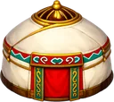

Schreib uns
Schick uns eine Nachricht per Karawane – oder per E-Mail, das geht schneller.
hello@nomadgame.co.ukAntworten des Rates
 Niemand zieht in meine Häuser ein
Niemand zieht in meine Häuser ein
Jedes Haus braucht an einer seiner Seiten eine Straße, und diese Straße muss mit der Seidenstraße verbunden sein, über die die Siedler ankommen. Eine zweite Häuserreihe wird über die Reihe davor erreicht, eine dritte Reihe bekommt niemanden. In der Bauvorschau zeigen bernsteinfarbene Felder, wo keine Straße hinführt.

Meine Häuser steigen auf und fallen wieder zurück
Jede Stufe hält nur, solange die Versorgung weiterläuft: Wasser, Nahrung vom Markt, die Besuche eines Schamanen und mehr. Tippe ein Haus an, um zu sehen, was es zum Aufstieg braucht und was ihm fehlt. Über die Schaltfläche „Ebenen“ siehst du auf einen Blick, welchen Straßen Wasser, Nahrung oder Glaube fehlt.
 Ein Gebäude meldet, es habe keine Arbeiter
Ein Gebäude meldet, es habe keine Arbeiter
Neun von zwanzig Einwohnern können arbeiten. Gibt es mehr Stellen als Arbeiter, bleiben die Gebäude, die zuletzt an der Reihe sind, leer. Baue mehr Häuser, oder tippe ein weniger wichtiges Gebäude an und schließe es über seine Karte („Schließen“), oder gib dem Gebäude, das du brauchst, „Vorrang“. Der Arbeitsberater zeigt, welchen Berufen Leute fehlen.
 Mein Springbrunnen oder Badehaus ist trocken
Mein Springbrunnen oder Badehaus ist trocken
Springbrunnen und Badehäuser brauchen Wasser aus Leitungen. Baue ein Reservoir, das an einen See oder Fluss grenzt, und von dort landeinwärts eine Kette weiterer Reservoirs. Die Ebene „Leitungen“ zeigt jedes Feld, das die Leitungen erreichen.
 Der Großkhan zürnt mir
Der Großkhan zürnt mir
Öffne den Khan-Berater, um zu sehen, was er verlangt und wie viel Zeit dir bleibt. Deine Lager halten seinen Anteil für dich zurück; schick ihn ab, bevor die Frist abläuft. Auch ein Geschenk aus deiner eigenen Börse besänftigt ihn.
 Wo wird meine Stadt gespeichert? Kann ich sie mitnehmen?
Wo wird meine Stadt gespeichert? Kann ich sie mitnehmen?
Deine Städte speichern sich alle 30 Sekunden und jedes Mal, wenn du das Spiel verlässt, von selbst auf deinem Gerät. Auf ein neues iPhone oder iPad ziehen sie mit einem iCloud- oder Computer-Backup deines Geräts um. Online-Konten gibt es nicht.
Wie ändere ich Sprache oder Ton?
Tippe im Hauptmenü auf das goldene Zahnrad, um die Einstellungen zu öffnen. Das Spiel spricht English, Русский, Türkçe, Deutsch, Français und Español und startet in der Sprache deines Geräts, wenn es sie beherrscht.
Wie fange ich von vorn an?
Öffne in einer Stadt das Menü oben rechts und wähle „Neue Stadt“ (im Modus „Die endlose Steppe“) oder „Neustart“ (in einem Szenario).